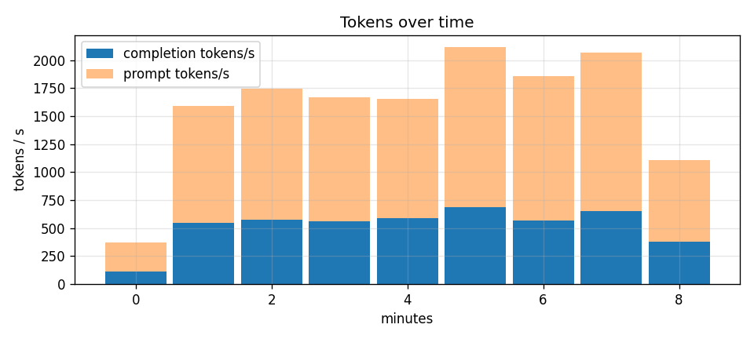

1,877 requests over 8.0 min · 570,382 prompt + 280,208 completion tokens · 0 errors
| tenant | requests | errors | prompt tokens | completion tokens | share (loaded) | $ loaded | $ marginal | TTFT p50 ms | p95 ms |
|---|---|---|---|---|---|---|---|---|---|
| rag | 227 | 0 | 349,896 | 10,896 | 23.3% | $0.0110 | $0.0109 | 623 | 1,179 |
| chat | 1423 | 0 | 196,552 | 182,144 | 54.7% | $0.0259 | $0.0255 | 100 | 863 |
| bulk | 227 | 0 | 23,934 | 87,168 | 22.0% | $0.0104 | $0.0103 | 627 | 1,167 |

Costs use wall-clock GPU hours (idle time is billed); "marginal" uses busy time only. MFU = tokens/s × 2 × params ÷ peak FLOPS; bandwidth utilisation assumes the weights are read once per decode step.